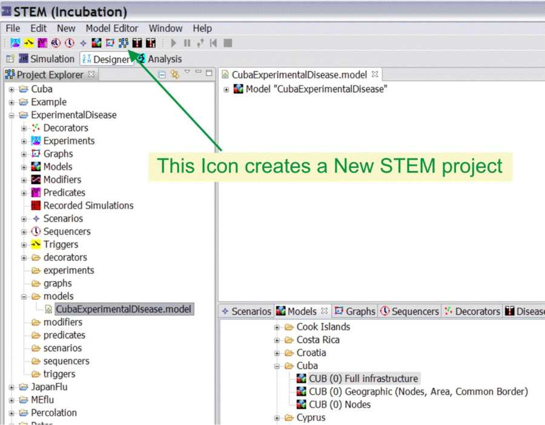
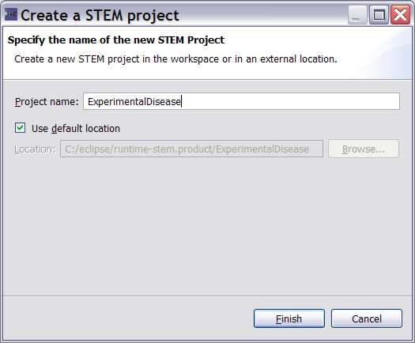

Step 1: Creation of a new Project.
This tutorial tells you how to create a project in the STEM Designer
perspective. A project is really a new Folder in you
your STEM workspace. You never need to access these folders or STEM design files
outside of the STEM environment but they
are all stored in the folder
...\runtime-stem.product
which is located in the
same folder as your STEM workspace (e.g. c:\runtime-stem.product).
The names used to create a Test project in this example are in parentheses.
Substitute your names as appropriate.
In this example, the scenario will be for Japan.
Note: There are icons for many of the actions but for clarity here
the menubar items are used.
The new project Icon is shown in Figure 1.
|
 |
| Figure 1: the new project Icon |
|
 |
|
Figure 2: The new project dialog |